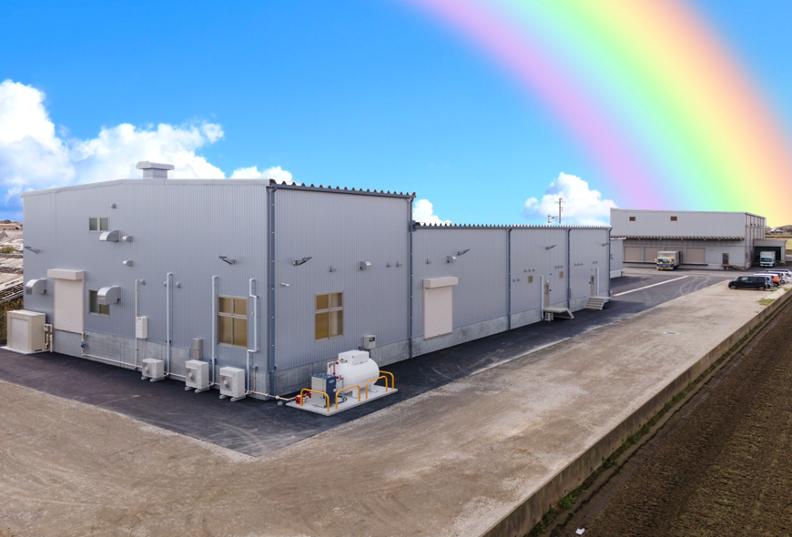
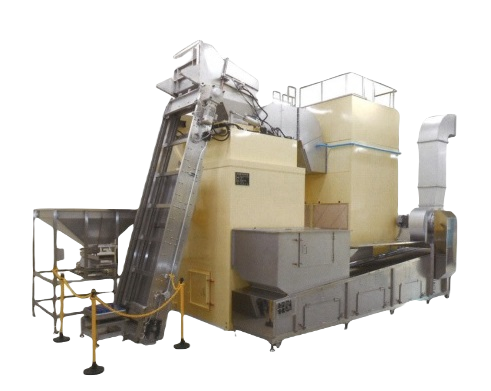
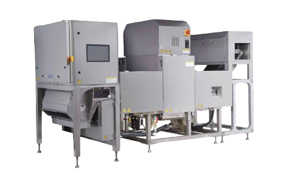
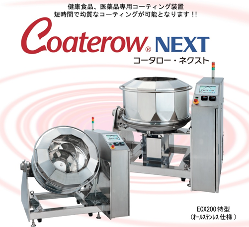

EST. NEW FACTORY
New Processing Plant
最新鋭の設備と職人の感性が融合した、川越屋の新加工場。
千葉県山武郡横芝光町より、ナッツの新たな可能性をお届けします。

LOCATION
千葉県山武郡横芝光町屋形3660
延床面積716㎡の広大なスペースに、ナッツ焙煎室、原料保管低温倉庫、ナッツ選別室、そしてオイルコート加工室を新設。衛生管理の行き届いた環境で、原料の受け入れから最終製品までを一貫して製造できる体制を整えました。
最適な温度管理で鮮度を保持
高度な食品安全管理システム
最新鋭のテクノロジーが、ナッツの品質を劇的に向上させます。
ナッツを効率よく、ムラなく焙煎する最新システム。熱風でナッツを浮遊させながら焙煎することで、一粒一粒に均一に火を通します。
※くるみとはラインを完全分離し、アレルゲン交差を防止。


「ディープラーニング」技術を搭載した最新モデル。RGBフルカラーカメラ、NIR（近赤外線）、X線の複合判定により、従来困難だった内部欠損や虫食い、同色異物を徹底的に排除します。
オールステンレス仕様の衛生的な新コーティングマシン。マルチスピン方式により、シーズニングやソルト、オイルを短時間で均質にコーティング。ムラのない美しい仕上がりを実現します。

Monthly Production Capacity
50t
50t
40t
25t
※自動包装機7ライン、手詰め2ラインにより業務用・小分け商品も柔軟に対応
新工場はピーナッツフリーの管理を徹底。流動層焙煎はくるみとの併用もなく、アレルゲンを厳格に分別管理することで、安心・安全な製品をお届けします。
JFS-B規格に準拠した製造管理体制。焙煎ライン・選別ラインにはX線を完備し、異物混入リスクを最小限に抑えています。
"味は、幸せを伝えるもの。
ナッツを通して、幸せの虹色を描きたい。"
お客様のニーズに応えるべく、日々味の研究を行っています。
納得のいく商品作りをご一緒に行わせていただきます。是非、ナッツの描く物語を作りましょう。